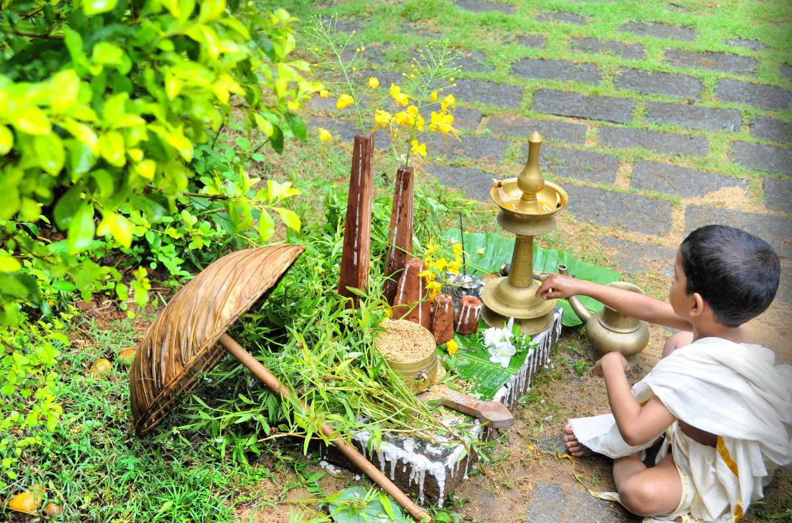
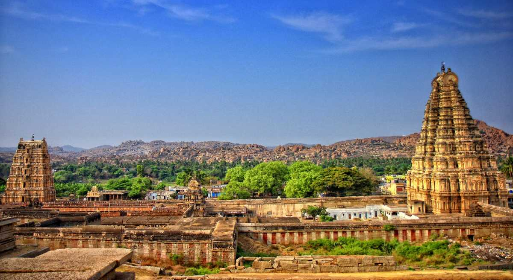

The harvest festival of Kerala, Onam is celebrated across religions and communities with equal enthusiasm. It was declared the national festival of Kerala in 1961. The carnival of Onam ranges from four to ten days. The first and the tenth day, Atham and Thiruonam respectively, are the most significant days. The festival is celebrated to welcome the King Mahabali who, according to the popular legend, visits his people annually on the festival of Onam
This is the largest festival of Hampi celebrated over three days in the first week of November. This festival, also called the Vijay Utsav, dates back to the Vijayanagar reign. The festival is extravagantly celebrated in all liveliness, colours and happiness. The puppet shows, fireworks and the processions display the cultural extravaganza of the place. It includes various state-sponsored programs to promote this heritage site such as rock climbing, rural and water sports. It also displays the handicrafts and puppets created by the local craftsmen. The streets reverberate with the sounds of drums and pipes with men posted under Gopuras, dressed in the military fashion of the golden era. The folk song concert called the Janapada Kalavahini and the Jumbo Savari or the elephant march are important features of the festival. The ethnic Kannadigas and drama are also something to look forward to
 Back